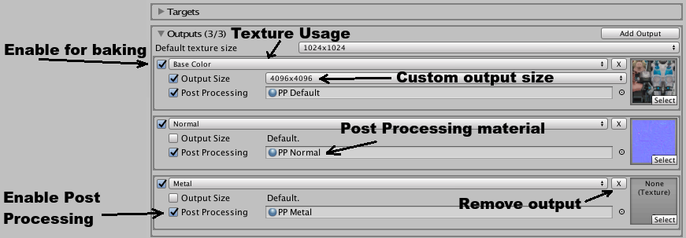

Targets
The meshes you want to target, and the textures that will be modified. Get started here.
Outputs
These are the textures that will be created or updated when Bake is called. To add one, open the outputs panel and in the top right select Add Output. When you select to target a texture in the Target panel, it will automatically add an output if one doesn't already exist. 
Baking API
// Will bake anything that is enabled.
BakeAll();
// To bake some.
Bake(UsageType.BaseColor, UsageType.Normal, UsageType.Metal);
Output API
var o = GetOutput(UsageType.BaseColor);
// If baker calls BakeAll, it will check this first.
o.enabled = true;
// Set a custom texture size.
// The smaller the faster it will be to generate.
// If you wanted to show live updates, you might set this low while the user is modifying things, then set it high when they are done.
o.customSize = true;
o.size = PowersOf2.p512;
// Change post processing.
// The default post processing fixes edge seams, and packs normals.
o.postProcessingEnabled = true;
o.postProcessing = Resource.Load<Material>("Texture Smith/Materials/PP Default");
// The input texture.
o.texture = Resources.Load<Texture>("Textures BaseColor");
// You can also call:
GetInputTex(UsageType.BaseColor);
// The output texture. You shouldn't ever change this.
var rt = o.outputTexture;
// You can also just call:
GetOutputTex(UsageType.BaseColor);
// Since it's a renderTexture, if you want to be able to read it just call:
var tex2D = o.outputTexture.ToTexture2D();
Advanced Settings
Region
Regions are used to speed up baking very large textures. When a region is selected, only that area of the textures will be updated when Bake is called. This might not provide much of an advantage if your textures are small or you are only creating a few at a time. But if you are creating lots of 4k+ textures, it can save time.
Editing Regions
Click Add Region then click Edit to bring up the Region Editor.
Top Sliders
- Gray: Renders the area out of bounds as dark gray, so it's easier to see the region.
- Nib: Edge nib size. Larger = easier to grab, smaller = easier to see what your doing.
Controls
- Mouse Wheel Click: Grab the workspace.
- Mouse Wheel Zoom: Zoom in and out.
- Left Click: Grab an edge nib or the full bounds.
- Mouse Move: Move the workspace or edge nib.
Ideally you should set a name for the region.
Using regions.
You must click Use to start using a region.
Click Use Full to use the full region.
In script:
// Set to region.
SetRegion(regionName);
// Reset.
SetRegion();
FlipV
Flips the textures upside down. This will likely be removed and done internally.
WrapUV
You can most likely leave this off and forget about it. I had one strange instance where someones mesh had uvs outside the 0-1 range. For rare instances like that, this will wrap the uv.
Height Blending
Enable height blending. The Baker normally paints 14 brushes at a time, so if there are more than 14 brushes it will have to do multiple passes. With height blending enabled it can only render 6 brushes at a time, so may be slower if you are using lots of brushes at once.
Clear Before Bake
Clears outputs before each bake. Disable it to preserve textures. I'll soon add an option to do this per output.
Always Bake
Will call Bake every update tick. Not ideal for large textures or if creating lots of textures.